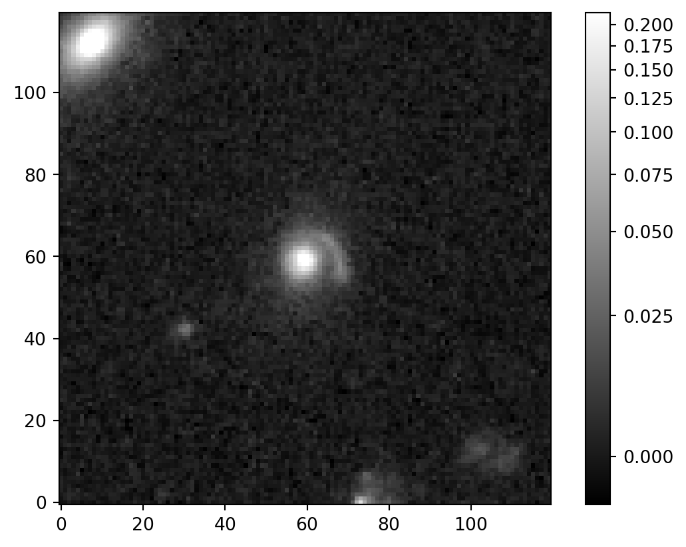
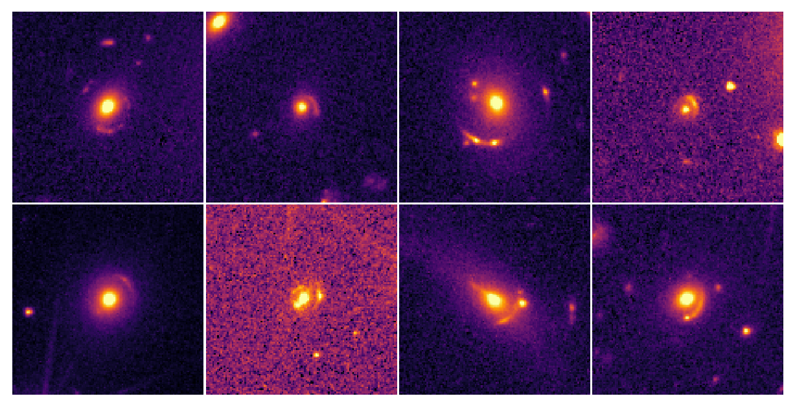

from astroquery.esa.euclid import Euclid
from astropy.coordinates import SkyCoord
from astropy.wcs import WCS
import astropy.units as u
from astropy.io import fits
import matplotlib.pyplot as plt
from astropy.visualization import astropy_mpl_style, ImageNormalize, PercentileInterval, AsinhStretch, LogStretch
import gtda.plotting
import pandas as pd
from astropy.io import ascii
import globTopology Final Project
TODO
- Ellaborate/explain each section in more detail
- Compute persistent image
- Convert persistent image to vectors
- Perform clustering of persistent features using K-means and/or Hierarchical clustering
- Look into PCA/PCR for potential clusterings??
- Get redshifts for each galaxy
Welcome Lori!
Hi Lori (I assume no one else is going to be looking at the current version of my project)!
I was thinking of presenting my final project as a website because 1) I have a website already, and 2) I can display code and results in a really easy way. Additionally, Quarto (which is how I made the website) has an option to save the output to slides, so I might do that for the actual presentation. We’ll see!
Starting below is a rough draft of what I have done so far.
Project Overview
This project combines astronomy, persistent homology, and machine learning to investigate topological properties in gravitationally lensed galaxies.
Astronomy
- What is a gravitationally lensed galaxy?
- Why do we care about them?
Persistent Homology
- What is it?
- How is it helpful?
- How has it been used in astronomy before?
- What do I plan
Machine Learning
- What is machine learning?
- Why do we need/want to perform clustering?
- How do the clustering algorithms work and what are they?
Data
- What data do I have? What does it look like?
- Where did I get the data from?
- Who funded the data?
- When was the data collected?
- Why was the data collected?
- How do I plan on using the data?
The code chunk below imports the necessary modules for working with this data.
Once all the libraries are imported, we can extract the data. Each lensed galaxy was found via a machine learning classification model, thus there existed a distribution of objects with associated probabilities that they were lensed galaxies, based on the model. Currently, this project only incorporates objects that had a “grade” of “A” (i.e. were of the best quality).
# get coordinates from list of targets (only select best images)
all_targets = ascii.read("D:/data/targets/q1_discovery_engine_lens_catalog.csv")
mask = (all_targets["subset"] == "discovery_engine") & (all_targets["grade"] == "A")
targets = all_targets[mask]The target list only contains the celestial coordinates of the grade-A lensed galaxies. Luckily, we can download cutouts of the targets. Note, this code chunk is intentially set to not run as all of the cutouts have already been extracted. Note, we have ~250 targets.
# don't run unless need redownload images!!!
# download the images for each target
empty_images = 0
for i in range(len(targets)):
r, d = targets["right_ascension"][i], targets["declination"][i]
coord = SkyCoord(r, d, unit=u.deg, frame='icrs')
radius = u.Quantity(0.5, u.deg)
print(f"r: {r}")
print(f"d: {d}")
print(coord)
print(radius)
# search euclid's mosaic product catalog for targets
job = Euclid.cone_search(coordinate=coord, radius=radius, table_name="sedm.mosaic_product", ra_column_name="ra", dec_column_name="dec", columns="*", async_job=True, verbose=True)
cone_results = job.get_results()
example_file = cone_results[cone_results['instrument_name'] == 'VIS'][0]
print(f"cone_results: {cone_results}")
# save results to output path
file_path = example_file["file_path"] + "/" + example_file["file_name"]
instrument = example_file["instrument_name"]
obs_id = example_file["tile_index"]
radius = 0.1 * u.arcmin
output_folder = 'D:/data/'
print(f"file_path: {file_path}")
print(f"instrument: {instrument}")
print(f"obs_id: {obs_id}")
if not os.path.exists(output_folder):
os.makedirs(output_folder)
output_file=output_folder + f'cutouts_0.1arcmin/target_{r}_{d}.fits'
saved_cutout_filepath = Euclid.get_cutout(file_path=file_path,
instrument=instrument, id=obs_id,
coordinate=coord, radius=radius, output_file=output_file)
print("Cutout saved at", output_file)
# looking at the cutout we made
try:
hdul = fits.open(output_file)
print(fits.info(output_file))
image_data = hdul[0].data
plt.imshow(image_data, interpolation='nearest', cmap='gray', origin='lower', norm=ImageNormalize(image_data, interval=PercentileInterval(99.5),
stretch=AsinhStretch()))
plt.colorbar()
plt.show()
except:
empty_images += 1
print(empty_images)Once the cutouts are extracted, we can display them so get a sense of what the data actually looks like. The code chunk below shows an example of what a gravitationally lensed galaxy looks like from the Euclid space telescope.
fits_files = glob.glob("D:/data/cutouts_0.1arcmin/*.fits")
for file in [fits_files[-1]]:
try:
hdul = fits.open(file)
print(fits.info(file))
image_data = hdul[0].data
header = hdul[0].header
wcs = WCS(header)
plt.imshow(image_data, interpolation='nearest', cmap='gray', origin='lower', norm=ImageNormalize(image_data, interval=PercentileInterval(99.5), stretch=AsinhStretch()))
plt.colorbar()
plt.show()
except:
print(f"EMPTY: {file}")Filename: D:/data/cutouts_0.1arcmin\target_274.3600657555939_68.36688052942732.fits
No. Name Ver Type Cards Dimensions Format
0 PRIMARY 1 PrimaryHDU 49 (120, 120) float32
None
Analysis
Once we have the images, the next step is to compute the persistent homology for each image. The code chunk below displays the example image using Python, a Giotto-tda heatmap mehtod, and calculates the cubical persistence of the example image.
from gtda.plotting import plot_heatmap
from gtda.homology import CubicalPersistence
import numpy as np
# # image_data
plt.imshow(image_data, cmap='inferno', origin='lower', norm=ImageNormalize(image_data, interval=PercentileInterval(99.5), stretch=AsinhStretch()))
plt.colorbar()
plt.xlabel("""X [pixels]
FIGURE 1: Example image of a gravitationally lensed galaxy used in
this project. The 0.1 arcmin x 0.1 arcmin image was taken from the
Euclid Q1 Data Release and is centered on the galaxy with a
characteristic lensing effect to the immediate top right.
""")
plt.ylabel("Y [pixels] ")
plt.title("Gravitationally Lensed Galaxy")
plt.show()
custom_scale = [
[0.0, "blue"], # Start color for low values
[0.2, "orange"] # Midpoint
]
plot_heatmap(image_data, colorscale=custom_scale, origin="lower")
persistence = CubicalPersistence(n_jobs=-1, reduced_homology=False, infinity_values=np.inf)
fit = persistence.fit_transform(image_data)
The code chunk below displays the 0 and 1 dimensional persistence diagrams for the example image.
persistence.transform_plot(image_data, 0)
persistence.transform_plot(image_data, 1)array([[[-5.69961313e-03, inf, 0.00000000e+00],
[-2.34657899e-03, 6.97053820e-02, 0.00000000e+00],
[-2.94795516e-03, 8.79587140e-03, 0.00000000e+00],
[ 1.07471254e-02, 1.98961701e-02, 0.00000000e+00],
[ 1.41588785e-03, 8.57438799e-03, 0.00000000e+00],
[-1.83192233e-03, 5.21705579e-03, 0.00000000e+00],
[-1.88268011e-03, 4.98976139e-03, 0.00000000e+00],
[-1.97241153e-03, 4.65259468e-03, 0.00000000e+00],
[-1.57136016e-03, 4.75254934e-03, 0.00000000e+00],
[-1.70291879e-03, 4.54108836e-03, 0.00000000e+00],
[-2.78186542e-03, 2.09810468e-03, 0.00000000e+00],
[-2.84650060e-03, 1.78895646e-03, 0.00000000e+00],
[-1.15745948e-04, 4.47814027e-03, 0.00000000e+00],
[ 9.58912889e-04, 5.39462175e-03, 0.00000000e+00],
[-1.86501129e-03, 2.39996659e-03, 0.00000000e+00],
[-3.66685301e-04, 3.87242856e-03, 0.00000000e+00],
[ 2.37490283e-04, 4.19730041e-03, 0.00000000e+00],
[-1.19843823e-03, 2.15535983e-03, 0.00000000e+00],
[-7.17575487e-04, 2.45551975e-03, 0.00000000e+00],
[ 4.79317008e-04, 3.40305245e-03, 0.00000000e+00],
[-9.01344698e-04, 1.98665611e-03, 0.00000000e+00],
[ 1.09377981e-03, 3.90476291e-03, 0.00000000e+00],
[-3.17047699e-04, 2.10963585e-03, 0.00000000e+00],
[-1.81436492e-03, 2.11038365e-04, 0.00000000e+00],
[ 1.34263409e-03, 3.23484419e-03, 0.00000000e+00],
[-2.53537577e-03, -8.61308945e-04, 0.00000000e+00],
[ 1.19272096e-03, 2.85519660e-03, 0.00000000e+00],
[ 1.14330760e-04, 1.74614985e-03, 0.00000000e+00],
[ 5.45019633e-04, 2.00857548e-03, 0.00000000e+00],
[-1.90009712e-03, -4.78501141e-04, 0.00000000e+00],
[ 6.64240797e-04, 1.91358384e-03, 0.00000000e+00],
[ 1.69082638e-03, 2.60744593e-03, 0.00000000e+00],
[-2.91878241e-04, 2.98493134e-04, 0.00000000e+00],
[ 5.58324298e-03, 5.99568384e-03, 0.00000000e+00],
[ 2.64369184e-03, 2.91663595e-03, 0.00000000e+00],
[ 4.21280507e-03, 4.36935527e-03, 0.00000000e+00],
[ 6.33515534e-04, 6.57916884e-04, 0.00000000e+00],
[ 0.00000000e+00, 0.00000000e+00, 1.00000000e+00]]])The next steps are to:
- compute the persistence image
- vectorize the result
- repeat for all targets
- cluster the vectorized targets using k-means and hierarchical clustering.
References
blah blah Sousbie, Pichon, and Kawahara (2011)
References
Chen, Yen-Chi, Shirley Ho, Peter E. Freeman, Christopher R. Genovese, and Larry Wasserman. 2015. “Cosmic Web Reconstruction Through Density Ridges: Method and Algorithm.” Monthly Notices of the Royal Astronomical Society 454 (1): 1140–56. https://doi.org/10.1093/mnras/stv1996.
Sousbie, T., C. Pichon, and H. Kawahara. 2011. “The Persistent Cosmic Web and Its Filamentary Structure – II. Illustrations.” Monthly Notices of the Royal Astronomical Society 414 (1): 384–403. https://doi.org/10.1111/j.1365-2966.2011.18395.x.